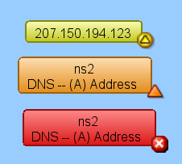
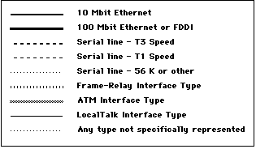
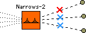

InterMapper provides visual cues to help you understand the states of the devices on your map quickly. Here is a summary of the visual indicators available in your map:
Devices turn different colors depending on the magnitude of the problem detected. Links may be "haloed" with yellow or orange as utilization reaches 50 and 90 percent respectively. These are coupled with status badges, described below.
These are the default color assignments. You can redefine the colors from the Server Settings window.

InterMapper uses status badges as additional visual cues to increase the ease with which you can determine the status of a device among many devices.
Note: You can specify which badges you want appear on devices from the InterMapper User Preferences window.
InterMapper draws dotted lines ("ants") next to a link to indicate that its current traffic flow is above a user-settable threshold value. Use the Thresholds>Traffic panel of the Map Settings window, available from the Edit menu, to change the settings and to view a legend of the different varieties of ants. You see the ants only in Monitor mode (as opposed to Edit mode.) To toggle between the two modes, click on the pencil icon in the toolbar or press Tab.
InterMapper regularly polls all the visible interfaces for packets, bytes, errors and discards.
Note: InterMapper uses SNMP to query the MIB of SNMP-enabled equipment to compute and display the traffic processed by each interface. Traffic indication appears only for SNMP-enabled devices.
The boxes represent the physical equipment of your network. The ovals represent the networks which link the routers together. The numbers in the bubbles are "network identifiers". For IP networks, the number is the network and the subnet portion of the IP addresses of all devices on it. For example, "192.0.16.0/24" is a network where IP addresses are in the range 192.0.16.0-192.0.16.254, and the subnet mask has 24 bits (it is a Class C network.) This is described in detail in the Subnet Mask FAQ.
Click and hold on a router or network to see a status window with information about that item. (This only works in "browse" mode -- press Tab, or click on the pencil icon in the upper left corner until it has the slash through it).
The style of the line corresponds to the type of interface.

As with the networks and devices, you can click and hold a link to see a Status window, containing information about the interface type and traffic statistics.

An X in the middle of a line or link means the link (or interface, or port) is down, as determined by SNMP. A red X signifies that the link's operational status is down. This could mean that it's broken, or simply that nothing is plugged into the interface. A blue X signifies that the link's administrative status is down (e.g., it has been explicitly disabled by an administrator.)
Many times, a switch is in Alarm state (orange) because it has ports that are not in use, and therefore, down. To resolve this, you should hide the ports from the Interfaces Window.